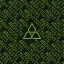

Architect
Known for their impressive builds and architectural prowess, the Architect clan focuses on construction and design. They often collaborate on large-scale building projects and are recognized for their creativity and attention to detail in structure
gathering.
Members

Former Members

Notable Events
Treasure Hunters Collaboration
elonMuschio and ShrillingJay collaborated during the Treasure Hunters event, sharing pig
coordinates via private messages. Together they located 7 of the 14 Treasure Pigs.